| 場所 | URL |
|---|---|
| 院内（病院のWi-Fi・診察室のMac） | https://giiv6wcx.lamarck-lan.com:14400/ 診察室のMacはこのページをブックマークしてあります。Tailscaleは要りません。 |
| 院外（自宅など） | http://100.111.66.29:4400/ 院外から使う時だけ Tailscale の設定が必要です（分からなければ院長へ）。 |
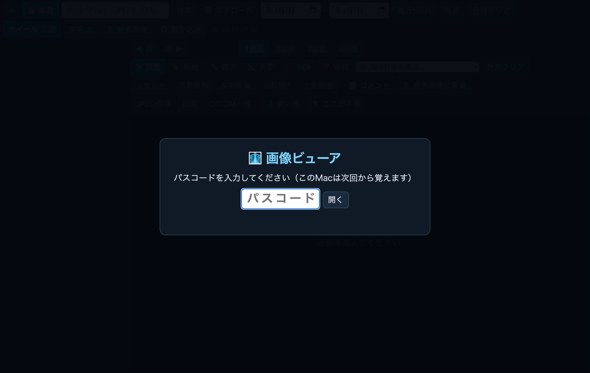
パスコードは院内で共有しているものを入れてください（分からなければ院長へ）。一度入れると、そのMacは次回から覚えます。
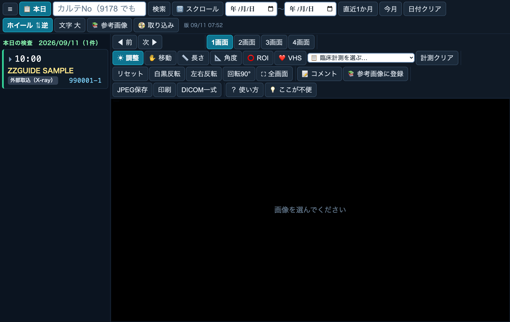
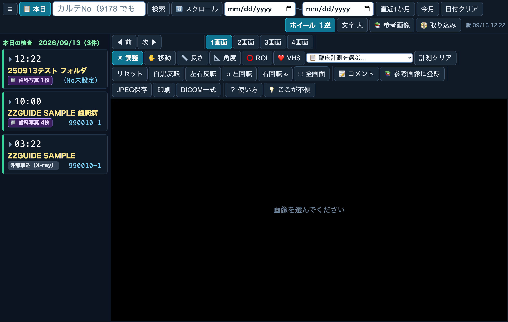
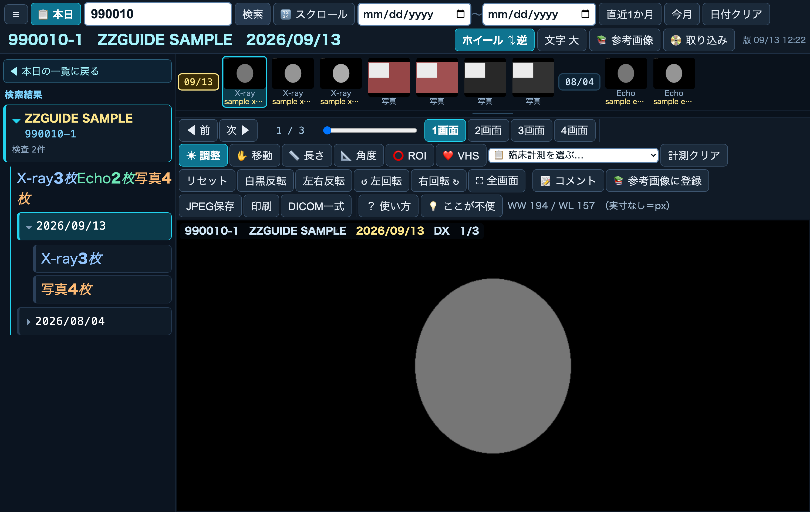
| やりたいこと | やり方 |
|---|---|
| カルテNoで探す | 上の枠に番号を入れて検索。枝番は要りません（9178 と入れれば 9178-1・9178-2 も出ます）。 |
| 名前で探す | 同じ枠に飼い主さん・ペットの名前を入れて検索。 ⚠ いまはローマ字で登録されている子だけ引けます（例 hasegawa）。カタカナ・漢字の名前では出ません。カルテNoで探してください。 |
| 日付で絞る | 直近1か月／今月のボタン、または日付の枠で期間を指定。解除は日付クリア。 |
| 日付が入力しにくい | 🔢 スクロールを押すと、年・月・日を選ぶ方式に切り替わります（古いMacで日付の枠が出ないとき用）。 |
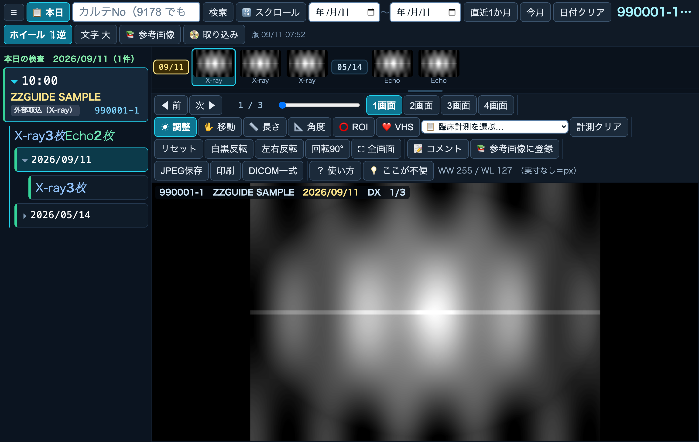
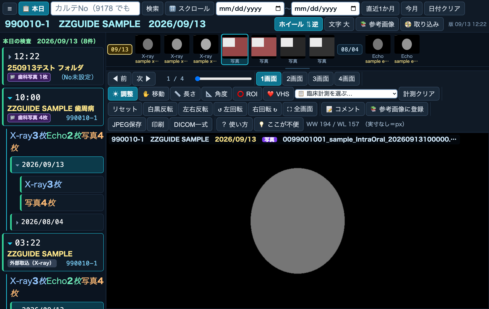
| 操作 | できること |
|---|---|
| 左ドラッグ | 左右＝コントラスト／上下＝明るさ（既定の「☀ 調整」のとき） |
| ホイール | 拡大・縮小（CT・MRI は断面が順に送られます）。向きが逆なら上の「ホイール ⇅」で入れ替えられます |
| ctrl＋ホイール | 拡大・縮小（CT・MRI でも）。「＋ 拡大」「－ 縮小」のボタンでも同じです |
| 右ドラッグ・中ドラッグ | 画像を動かす（「✋ 移動」でも同じ）。Option ⌥ を押しながら左ドラッグでも動かせます（右ボタンが無いマウス・トラックパッド向け） |
| ↺ 左回転／右回転 ↻ | 90°ずつ回します |
| 編集した見え方 | 拡大・位置・明るさ・回転・反転は画像ごとに覚えます。次へ送って戻っても、別の検査へ行って戻っても、編集したままで出ます（リセットを押した画像は既定に戻ります。ページを閉じるまで有効） |
| ダブルクリック | 全画面。Esc で戻ります |
| ← → | 次の画像・次の断面へ（Shift＋ホイールでも同じ） |
| ☰（左上） | 左の一覧を隠して、画像を大きく見る |
| 文字 大 | 文字の大きさを変える（Macごとに覚えます） |
開き方は Mac と同じです（上の「1. アプリを開く」のURL・同じパスコード）。指では次のように動きます。
| 指の操作 | できること |
|---|---|
| 1本指でなぞる | 左右＝コントラスト／上下＝明るさ（「☀ 調整」のとき）。「✋ 移動」を押してからなぞると画像が動きます |
| 2本指でつまむ・広げる | 拡大・縮小。2本指のまま動かすと画像も動きます |
| 2回続けて軽く叩く | 全画面。もう一度2回叩くと戻ります |
| 測る（長さ・角度・VHS・ROI） | 道具を選んでから、点を打ちたい所を指で軽く叩きます |
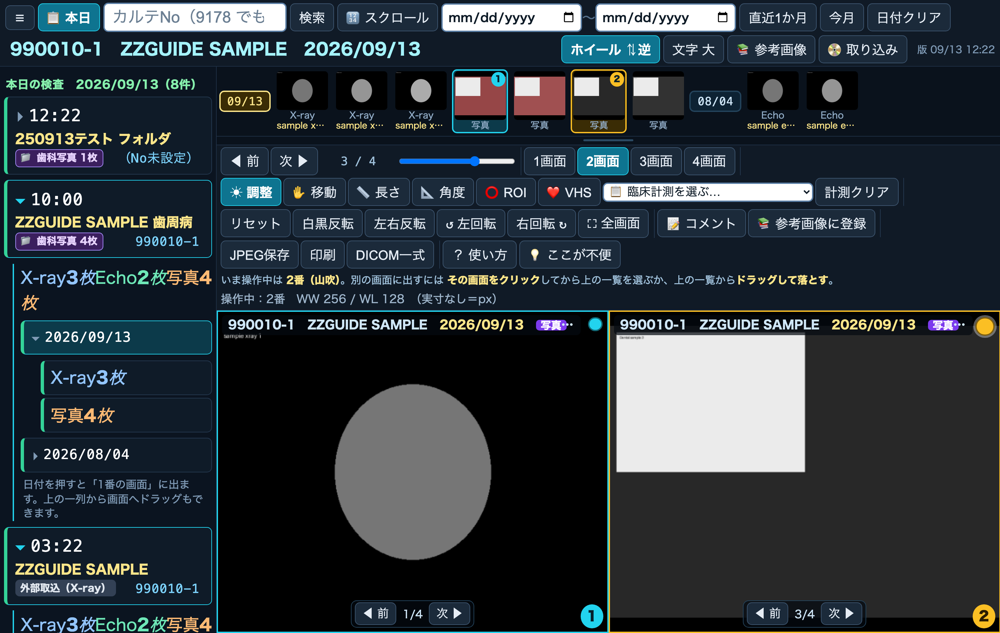
コマ数が複数ある画像を選ぶと、下に再生の操作が出ます。
| ボタン | 意味 |
|---|---|
| ▶ 再生 / ■ 停止 | 再生・停止。先に全コマを読み込むので、カクつかずに流れます。 |
| 🔁 繰り返す | 最後まで行ったら最初に戻ります（既定は繰り返す）。押すと1回だけ再生に変わります。 |
| つまみ | 好きなコマまで送る。ホイールでも1コマずつ動きます。 |
| 道具 | 使い方・出るもの |
|---|---|
| 📏 長さ | 2点をクリック。実寸（mm・cm）で出ます。実寸の情報が画像に無いときは px と明記されます。 |
| 📐 角度 | 3点（端 → 頂点 → 端）をクリック。 |
| ⭕ ROI | 範囲を囲むと、その中の平均CT値（HU）が出ます（CT向け）。 |
| ❤️ VHS | 心臓の長軸2点・短軸2点 → T4前縁 → 椎骨の境目を順にクリック。手で測るのと同じ考え方で椎骨何個ぶんかを計算します（目安：犬 8.5〜10.6／猫 6.7〜8.1）。 |
| 臨床計測を選ぶ… | よく使う計測が26項目入っています（循環器・呼吸器・消化器・泌尿器・整形外科）。選ぶとどこを押せばよいかが順番に案内され、参考値も一緒に出ます。 |
| 計測クリア | その画像の計測をまとめて消します（1本ずつ消すこともできます）。 |
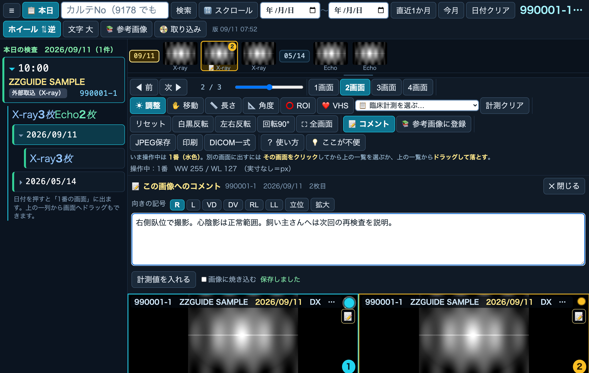
きれいに撮れたレントゲンを見本として登録しておき、あとから並べて見比べるための機能です。飼い主さんへの説明にも使えます。
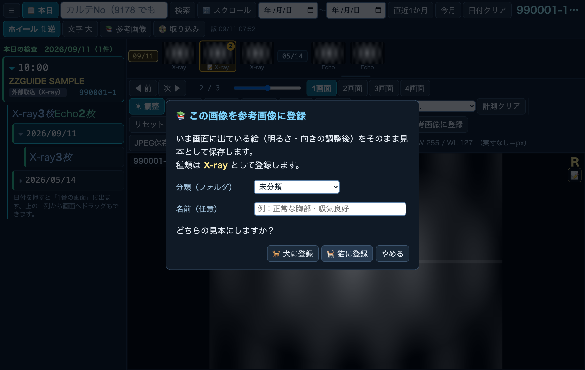
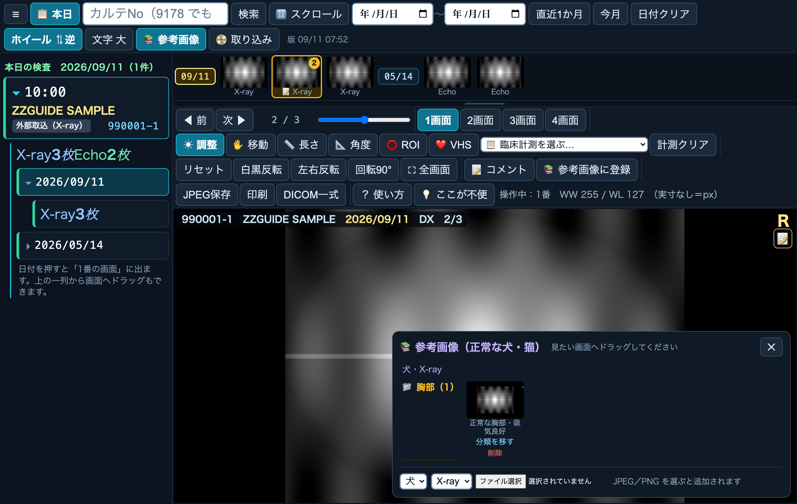
| ボタン | できること |
|---|---|
| JPEG保存 | 上の一列のサムネの □ で画像を選び（いまの画像には最初から印）、帯の［⬇ ダウンロード］を押します。種類ごとのボタン（X-ray・Echo など）でまとめて選べます。2枚以上は1つのファイル（ZIP）、1枚だけならJPEGのまま保存されます。 iPad・iPhone（2026-10-31 から）：［⬇ ダウンロード］を押すと、準備ができたところでボタンが［📷 写真に保存（枚数）］に変わります。もう一度押して、出てきた画面で「画像を保存」を押すと「写真」アプリに入ります（ZIPを開く手間はありません）。 計測の線・焼き込んだコメントを入れたいときは、帯の［いまの画面だけ保存（計測線つき）］を使います。 |
| 印刷 | 出している画面を全部横に並べて印刷します。 |
| DICOM一式 | その検査をDICOMのまままとめて取り出します（他院へ渡すとき用）。 |
| 📱 飼い主さんに送る | 📀 CD書き出しと同じ □ で画像を選び、帯の［📱 飼い主さんに送る］で飼い主さまのマイページ（LINE）へ送ります。その日の検査値と先生のひとことも一緒に送れます。手順はマイページのガイドの4章。 |
| 📀 取り込み | 他院のCD・トナリのDICOM、写真（JPEG・PNG）、動画（WMV など）をこの画面にドラッグ＆ドロップ（下の表）。 |
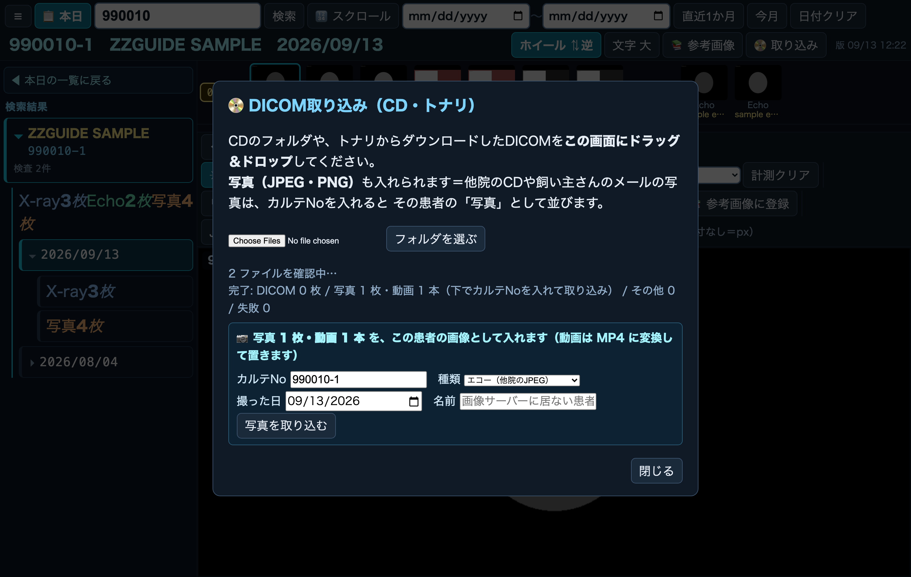
| 落としたもの | どうなるか |
|---|---|
| DICOM（他院のレントゲンCDなど） | そのまま取り込まれ、あとで「付け替え」で当院のカルテNoにします。他院の患者IDと飼い主名は当院のものに書き換わります（まだ画像サーバーに居ない患者は名前も入れます）。 |
| 写真（JPEG・PNG）＝他院のエコーCDの静止画、飼い主さんのメールの写真など | カルテNo・種類（写真／エコー／レントゲン）・撮った日を入れて「写真を取り込む」。その患者の検査として並びます。スマホ写真の向きは自動で直ります。 |
| 動画（WMV・AVI・MOV など）＝他院のエコーCDの動画など | 同じ欄で一緒に取り込めます。サーバーでMP4 に変換して、その患者の「動画」として並びます（1本に数秒〜数十秒）。 |
消したい画像を画面に出して、道具の列の［🗑 削除・非表示］を押します（iPhone は「…その他」の中）。確認の画面に、患者さん・日付・種類が出るので、合っているか見てから押します。画像は1枚ずつです。
| 画像の種類 | どうなるか |
|---|---|
| 取り込んだ画像（サムネに「外部」の印） | 赤い［削除する］で画像サーバーから消えます。サーバーに30日間は控えが残るので、間違えて消したときは院長に伝えてください。 |
| 院内で撮った画像・受付PCの歯科フォルダの写真 | 消せません。［非表示にする］で一覧から外れます。画像そのものは残ります。 |
| 非表示にした画像 | 左の一覧の「非表示の画像も表示（○枚）」を押すと、薄く出ます。その画像を出してもう一度［🗑 削除・非表示］を押すと［非表示をやめる］で元に戻ります。 |
| 選ぶもの | 用途 |
|---|---|
| 骨・歯を立体で見る | 飼い主さんへの説明向き |
| 骨を透かして見る（MIP） | 骨折線・骨病変を探す（骨の中が透けて見える） |
| 造影CTで血管と骨を見る | 造影したシリーズで、骨と一緒に太い血管を管として見る |
| 血管だけ（造影前を差し引く） | 造影したシリーズで選ぶ。横の欄で造影前のシリーズを選ぶ（名前に pre などがあれば自動）。初回は位置合わせと差し引きで30秒ほど待つ→「差し引き済み（ずれ ○mm）」。皮膚の縁に点々が残る・骨に接する血管は少し細く見える。造影前と向きが違う撮影は差し引けません。 |
「薄いものを消す」のバーを右へ動かすと、撮影台やクッションなど薄く写っているものから順に消えます。骨だけを見たいときに使ってください。手を止めると3Dが描き直されます。
| したいこと | 操作 |
|---|---|
| 3Dを回す | 3Dの上でドラッグ。横に動かす＝画面の真ん中の縦の線を軸に左右へ、縦に動かす＝真ん中の横の線を軸に上下へ、斜めはその両方を合わせて自由に回ります。立体を手で掴んで動かす向きに回ります（右へ動かすと手前の面が右へ）（どの向きから見ていても画面の線が軸・上下も止まらずひっくり返せる）。動かしている間も絵が付いてきます（少し粗い絵）。手を放すと、きれいな絵に描き直します。iPad は1本指でなぞります。 |
| 拡大・縮小 | 3Dの上でホイール（トラックパッドは2本指で上下、または開く／閉じる）。上の「＋ 拡大」「－ 縮小」でも同じです。iPad は2本指でつまみます。 |
| 見たい所を拡大する | その場所にカーソルを置いてホイール・ピンチ。カーソルの所に向かって大きくなります。 |
| 3Dを画面の中で回す | ⌘ を押しながらドラッグ（枠の真ん中のまわりを円を描くように）。iPad は2本指でひねる。真ん中に点がある丸い矢印のボタンでも90度ずつ回せます。 |
| 拡大した3Dをずらす | 右ボタンでドラッグ、または option を押しながらドラッグ。トラックパッドは上の「✋ 移動」を押してからドラッグ（もう一度押すと回転に戻る）。iPad は2本指のままずらす。 |
| 拡大した断面をずらす | 拡大しているときに、その枠をドラッグ。 |
| 決まった向きから見る | 上の「見る向き…」で 左から／右から／背側から／腹側から／頭側から／尾側から を選ぶ。回すボタン（輪と矢印の絵）で90度ずつ回す：横長の輪＝縦の線が軸で左右へ、縦長の輪＝横の線が軸で上下へ（矢印の向きへ手前の面が動く）、真ん中に点がある丸い矢印＝画面の中で左回り・右回り。拡大しているときは、画面の真ん中に見えている所を中心に回ります。 |
| 向きを確かめる | 画面の端に向きの文字が出ます：R＝右・L＝左・A＝腹側・P＝背側・H＝頭側・F＝尾側（一般的な画像システムと同じ文字）。MPR は一般的な放射線科の向き＝横断は画面の右が体の左（L）・上が腹（A）、前額断は右が L・上が H、矢状断は右が P・上が H。3Dは回すと文字も変わります。 |
| 3Dを手前から切って中を見る | 上の「手前から切る」のつまみを右へ。3Dの上で Shift＋ホイールでも深さが変わります。切る面はいつも画面と平行です。 |
| 最初の向き・大きさ・位置に戻す | 上の「↺ 元に戻す」 |
| 1つの枠を画面いっぱいに出す | その枠をダブルクリック。もう一度ダブルクリックで4分割に戻ります。iPhone・iPad は指で2回トンです。 |
| 断面（横断・前額断・矢状断）を送る | その枠の上でホイール、または下のつまみ。 |
| 断面を拡大する | その枠を押してから「＋ 拡大」、または ctrl＋ホイール。 |
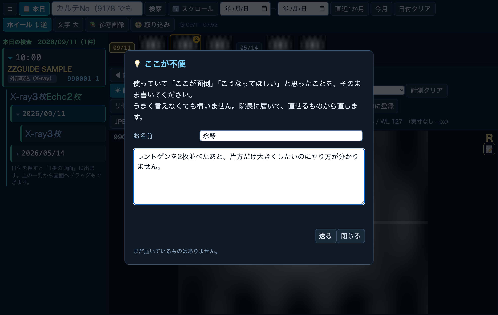
使っていて「ここが面倒」「こうなってほしい」と思ったことは、その場で書いて送ってください。うまく言えなくて構いません。院長に届いて、直せるものから直します。直ったら連絡します。
| こんなとき | どうするか |
|---|---|
| 画面が真っ暗・何を押しても反応しない | 画面に赤い文字で理由が出ます。その文章をそのまま院長へ伝えてください（原因が分かるようになっています）。 |
| 「画面を開けませんでした」と赤い文字が出た | ⌘R（再読み込み）で元に戻ります。そのまま診察を続けてください。出た文章は写真に撮って院長へ。 ※歯科の写真をたくさん見たときに出ていたものは、2026-09-15 に対策済みです。 |
| 直したはずの機能が無いように見える | 右上の「版 ○○/○○ ○○:○○」の日時を院長へ。古い画面を掴んでいる可能性があります。 |
| 今日撮ったのに一覧に出ない | 20秒お待ちください。それでも出なければ、機器側でカルテNoが入っていない可能性があります（⚠印で出ます）。 |
| 患者が見つからない | 枝番なし（9178）で検索してみてください。カタカナ・漢字の名前では引けません（ローマ字の子だけ）。 |
| 歯科フォルダの動画を開くと「動画を軽くしています…」と出る（2026-10-16 追加） | カメラの動画は大きいので、サーバーが軽い動画に作り直してから流します（22秒の動画で約2秒）。今日の動画は本日一覧に出た時点で作っておくので、ふつうはすぐ流れます。20秒たっても終わらないときは、元の動画をそのまま流します。 |
| 焼き終わったCDをドライブから出したい（2026-10-16 追加） | CD書き出しの帯にある「💿 取り出し」を押すと、受付PCのドライブからディスクが出ます。出てこないときは、ドライブのボタンで取り出して、院長へ伝えてください。 |
| 歯科写真の行に「⚠ カルテNo ○○ は「△△」の番号です」と出る／患者を開いたら「名前がこの子と合わないので出していません」と出た（2026-10-21 追加） | フォルダ名の先頭の番号が別の患者さんの番号になっています。画像はその行からフォルダとして見られますが、患者の記録には付いていません。受付PCでフォルダ名の番号を正しいカルテNoに直してください。次の走査（1〜2分）から正しい患者として開けます。 |
| エコーの動画が出るまで待たされる | 1本ずつ読み込みます。▶ 再生を押す前に少し待つと、そのあとは滑らかに流れます。 |
| 文字が小さくて読めない | 上の「文字 大」を押してください。そのMacが覚えます。 |
| 歯科フォルダ・症例画像フォルダに入れたのに本日の一覧に出ない | 1〜2分お待ちください。それでも出なければ、受付PCの「新 データフォルダー ＞ 歯科」（または「症例画像」）の中に入っているか、フォルダ名の先頭がカルテNoになっているか（無くても「No未設定」で出ます）を見てください。 |
| CDのファイルが読み込めない | 取り込み画面に理由が出ます（「DICOMでも写真でもない」「サーバー 400 …」など）。その文章を院長へ。古いMacはフォルダごと落とせないので、中のファイルを全部選んで落とします。 |
| 「フォルダを選ぶ」でCDまでたどれない | 選ぶ画面で ⌘＋⇧＋C を押すと、CDが並ぶ一番上の場所に移ります。左の欄にCDが出ないMacは、Finder の「環境設定 ＞ サイドバー」で「CD、DVD、およびiPod」にチェックを入れてください。 |
| 右ドラッグで画像が動かない | Option ⌥＋左ドラッグで動かしてください。それで動くなら、そのMacの設定でマウスの「副ボタンのクリック」が無効になっています。 |
| 取り込んだ画像が上の一列に見当たらない | 取り込み後はその画像が選ばれた状態で出ます。X線・エコーから2時間以内に入れた写真は、その後ろに並びます（一列を右へスクロール）。2時間以上あけて入れた写真は左端です。 |